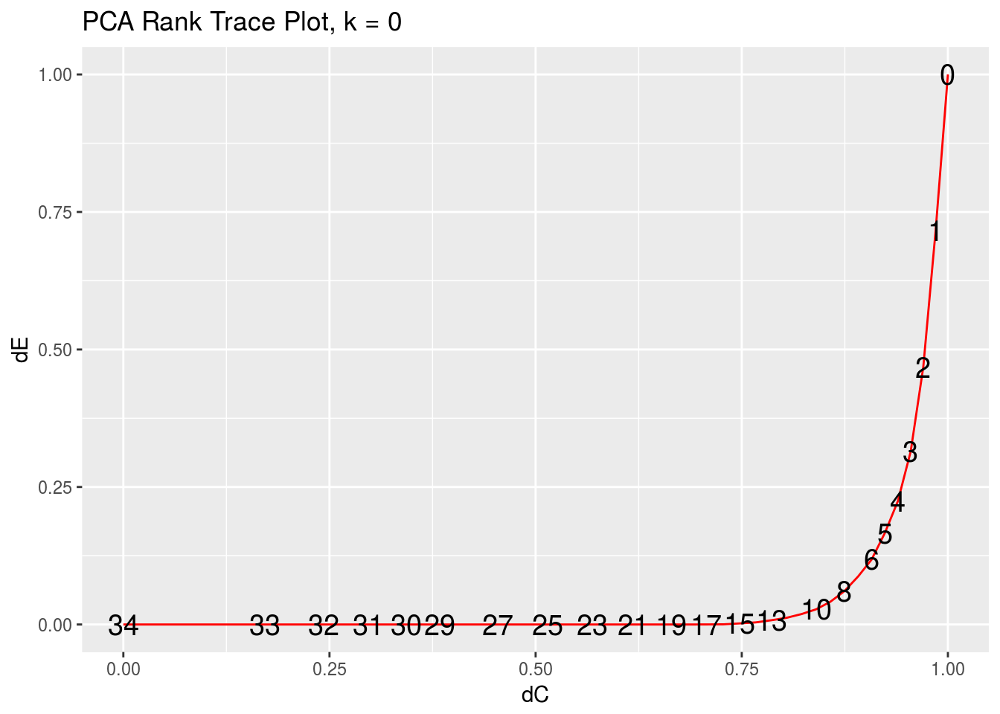

Data Visualization in rrr
Chris Addy
2016-11-29
The Philosophy of Graphics in rrr
The graphical display of data should be intuitive enough that any viewer of the display unfamiliar with the data, even unfamiliar with statistical analysis generally, should be able to see clear patterns, if in fact clear patterns exist in the data. This, the author believes, is especially true for multivariate data, where due to the higher dimensionality of the data, the potential for visualization to overwhelm is high.
data(pendigits)
digits <- pendigits
digits_class <- digits %>% dplyr::select(V35)
digits_features <- digits %>% dplyr::select(-V35, -V36)
digits_pca <- pca(digits_features)
pca_rank_trace(digits_features)## # A tibble: 35 × 3
## rank delta_C delta_residuals
## <int> <dbl> <dbl>
## 1 0 1.0000000 1.00000000
## 2 1 0.9851844 0.71687775
## 3 2 0.9701425 0.46805987
## 4 3 0.9548637 0.31446713
## 5 4 0.9393364 0.22432933
## 6 5 0.9235481 0.16640087
## 7 6 0.9074852 0.11813147
## 8 7 0.8911328 0.08737814
## 9 8 0.8744746 0.06065970
## 10 9 0.8574929 0.04138801
## # ... with 25 more rowspca_rank_trace_plot(digits_features)
pca_pairwise_plot(digits_features)
pca_pairwise_plot(digits_features, pc_x = 1, pc_y = 3, class_labels = digits_class)